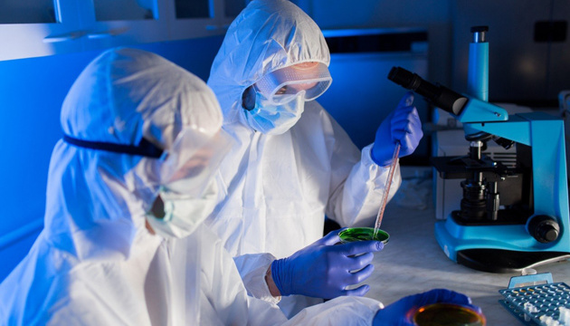

FORENSIC SCIENCE
Adonese Kabtoul
Jobs

Duties & Responsibilities:
- Report findings.
- Testify in court.
- Analyze evidence.
- Document findings.
- Handle crime scene evidence.
- Classify and organize evidence.
- Collaborate with crime scene investigators.
Salary:
Median Annual Salary: $57,850
Top 10% Annual Salary: $95,600
Bottom 10% Annual Salary: $33,880
Certification:
BiOLOGY: Microbiology, molecular biology, cell biology, etc.
CHEMISTRY: Biochemistry and organic chemistry.
FORENSIC PATHOLOGY: Even schools that do not offer degree programs in forensic science often offer courses specific to the field.
RELEVANT SOURCES: Genetics, toxicology, calculus, statistics, criminology courses, etc.
Skills:
- COMMUNICATION: Forensic science technicians must have excellent speaking and writing skills in order to properly share information with colleagues, as well as present findings in court. In addition, they also need to collaborate well with crime scene investigators and other law enforcement officers.
- PROBLEM SOLVING: Must use scientific methods to solve problems and connect different puzzle pieces from a crime scene. Conclusions will rarely be obvious, and forensic science technicians need to work through evidence meticulously.
- CRITICAL THINKING: Must question everything and eliminate all other possibilities before reaching final conclusions.
- ATTENTION TO DETAIL: Examining evidence requires the ability to notice minute details and subtle differences. Furthermore, the handling and cataloging of evidence must be done following precise procedures so no evidence can be questioned due to it being mishandled.
Work Enviorment:
- Coroners
- Morgues
- lab setting analyzing evidence collected by investigators.
- Called to testify as witnesses in criminal cases in order to explain their findings.